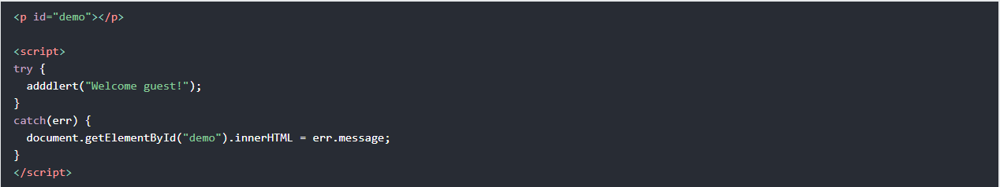

امید میلانی فرد 10/26/2021
0
خواندن این مطلب ۱۰ دقیقه زمان میبرد.
جاوا اسکریپت برای مدیریت خطا ها از exception استفاده میکند.
مدیریت خطاها با کلمات کلیدی زیر انجام میشود:
- try: بلوکی که در آن می توانید خطا هایی که رخ میدهند را دریفات کنید.
- catch: بلوکی کی در آن خطا را مدیریت می کنید.
- throw: کلمه کلیدی که با آن یک خطا ایجاد می کنید.
- finally: کد های موجود در این بلوک بعد از اتمام ترای و کچ اجرا می شوند.

برای ایجاد خطای زیر از کدام کلمه کلیدی باید استفاده شود؟
برای مدیریت خطای زیر از کدام کلمه کلیدی باید استفاده شود؟
try { throw new Error() } (e) { console.log(e.message) }
برای نوشته شدن bye در هر حالتی از کدام کلمه کلیدی باید استفاده کرد؟
try { throw new Error() } catch (e) { console.log(e.message) } {console.log('bye!')}